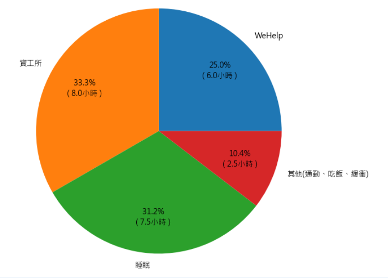
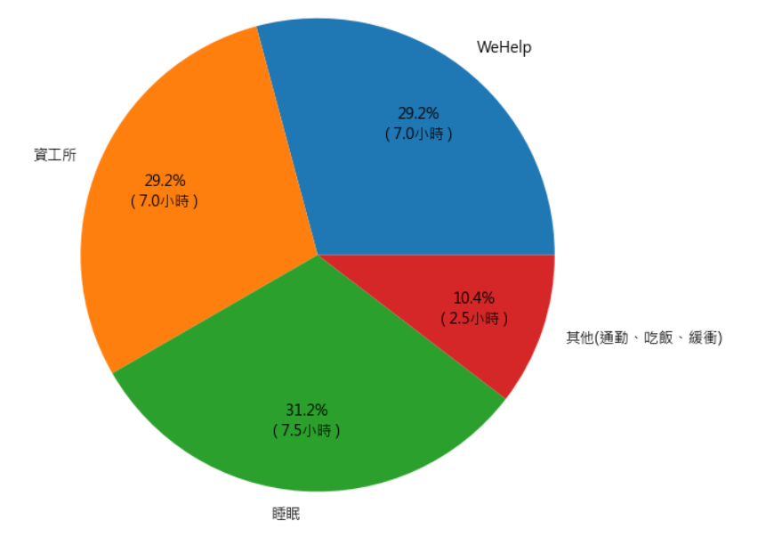

(溫馨提醒: 手機瀏覽可滑動區塊看到其他內容)
雖然我前述有提到我今年有準備資工所的計畫，但我的第一優先仍是以訓練營的工作為重。
在第一階段時，我計畫每天(一周七天)投入六小時的時間在WeHelp的訓練上，另外再投入八小時到資工所和電腦科學的知識學習。
如果能進入第二階段，則我預計每天投入六小時在WeHelp的訓練，另外再投入八小時到資工所和電腦科學的知識學習。
如果有幸撐到第三階段，則我預計每天投入七小時的時間在WeHelp的訓練，另外再投入七小時到資工所和電腦科學的知識學習。
詳細的時間安排如下圖所示:(以下圖表是利用python的matplotlib所作)
第一階段 & 第二階段: 第三階段:

